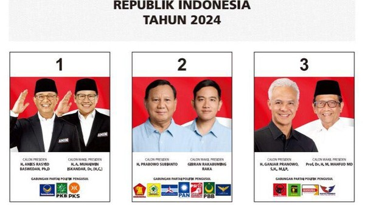
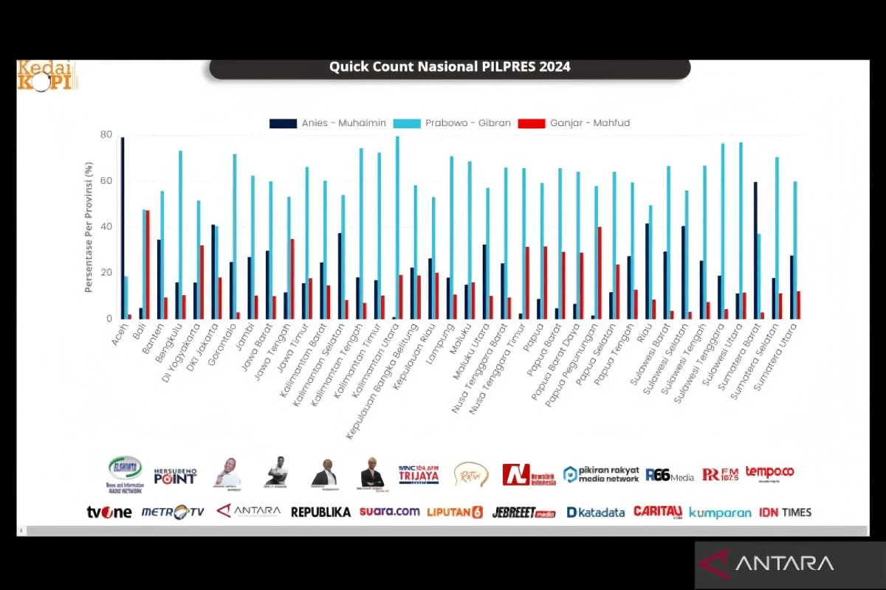

Hasil Pemilu Presiden 2024 per Provinsi

| Provinsi |
Anies-Muhaimin |
Prabowo-Gibran |
Ganjar-Mahfud |
Total Suara |
| Di Yogyakarta |
496.280 |
1.269.265 |
741.220 |
2.506.765 |
| Gorontalo |
227.354 |
504.662 |
41.508 |
773.524 |
| Kalimantan Tengah |
256.811 |
1.097.070 |
158.788 |
1.512.669 |
| Lampung |
791.892 |
3.554.310 |
764.486 |
5.110.688 |
| Bali |
99.233 |
1.454.640 |
1.127.134 |
2.681.007 |
| Kep. Bangka Belitung |
204.348 |
529.883 |
151.109 |
885.340 |
| Kalimantan Barat |
718.641 |
1.964.183 |
543.450 |
3.226.274 |
| Sumatera Selatan |
997.299 |
3.649.651 |
606.681 |
5.253.631 |
| Jawa Tengah |
286.6373 |
12.096.454 |
7.827.335 |
22.790.162 |
| Dki Jakarta |
2.653.762 |
2.692.011 |
1.115.139 |
6.460.912 |
| Kepulauan Riau |
370.671 |
641.388 |
140.733 |
1.012.059 |
| NTT |
153.446 |
1.798.753 |
958.505 |
2.910.704 |
| Kalimantan Utara |
72.056 |
284.209 |
51.451 |
407.716 |
| Kalimantan Selatan |
849.948 |
1.407.684 |
159.950 |
2.417.582 |
| Banten |
2.451.383 |
4.035.052 |
720.275 |
7.206.710 |
| Kalimantan Timur |
448.046 |
1.542.346 |
240.143 |
2.230.535 |
| Jawa Timur |
4.492.652 |
16.716.603 |
4.434.805 |
25.644.060 |
| Sulawesi Tenggara |
361.585 |
1.113.344 |
90.727 |
1.565.656 |
| Sulawesi Barat |
223.153 |
533.757 |
62.514 |
819.424 |
| Riau |
1.400.093 |
1.931.113 |
357.298 |
3.688.504 |
| Papua Barat |
37.459 |
172.965 |
120.565 |
330.989 |
| Bengkulu |
229.681 |
893.499 |
145.570 |
1.268.750 |
| Sulawesi Utara |
119.103 |
1.229.069 |
283.796 |
1.631.968 |
| Sumatera Barat |
1.744.042 |
1.217.314 |
124.044 |
3.085.400 |
| Sulawesi Selatan |
2.003.081 |
3.010.726 |
265.948 |
5.279.755 |
| Provinsi Jambi |
532.605 |
1.438.952 |
234.251 |
2.205.808 |
| Papua Selatan |
41.906 |
162.852 |
110.003 |
314.761 |
| NTB |
850.539 |
2.154.843 |
241.106 |
3.246.488 |
| Aceh |
2.369.543 |
787.024 |
64.677 |
3.221.244 |
| Sumatera Utara |
2.339.620 |
4.660.408 |
999.528 |
7.999.556 |
| Maluku Utara |
200.459 |
454.943 |
91.293 |
746.695 |
| Sulawesi Tengah |
386.743 |
1.251.313 |
160.594 |
1.798.650 |
| Sulawesi Tengah |
386.743 |
1.251.313 |
160.594 |
1.798.650 |
| Papua Tengah |
128.557 |
638.616 |
335.089 |
1.102.262 |
| Papua Barat Daya |
48.405 |
209.403 |
99.899 |
357.707 |
| Maluku |
228.557 |
665.371 |
186.395 |
1.080.323 |
| Jawa Barat |
9.099.674 |
16.805.854 |
2.820.995 |
28.726.523 |
| Papua Pegunungan |
284.184 |
838.382 |
175.956 |
1.298.522 |
| Papua |
67.592 |
378.908 |
178.534 |
625.034 |
| Total Suara Provinsi |
40.971.906 |
96.214.691 |
27.040.878 |
164.227.475 |
Total Keseluruhan Suara
| Kandidat |
Total Suara |
| Anies-Muhaimin |
40.971.906 |
| Prabowo-Gibran |
96.214.691 |
| Ganjar-Mahfud |
27.040.878 |
| Total Suara Keseluruhan |
164.227.475 |
Ini Adalah Diagram Dari Pemilu Presiden 2024
